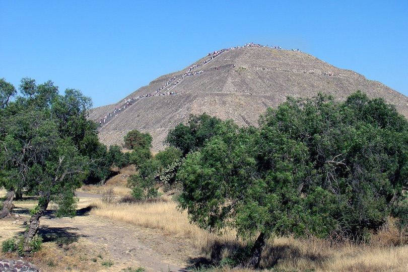

In the 2nd century BC a new civilization arose in the valley of Mexico. This civilization built the flourishing metropolis of Teotihuacan and its huge pyramids. The Pyramid of the Sun was built around 100 AD and is the largest pyramid in Teotihuacan and all of Mexico. The construction of the smaller Pyramid of the Moon started a century later and was finished in 450 AD. Seven centuries after the demise of the Teotihuacan empire the pyramids were honored and utilized by the Aztecs and became a place of pilgrimage. Mesoamericas greatest city is just 31 miles (50km) northeast of Mexico City and can be reached by bus or taxi.